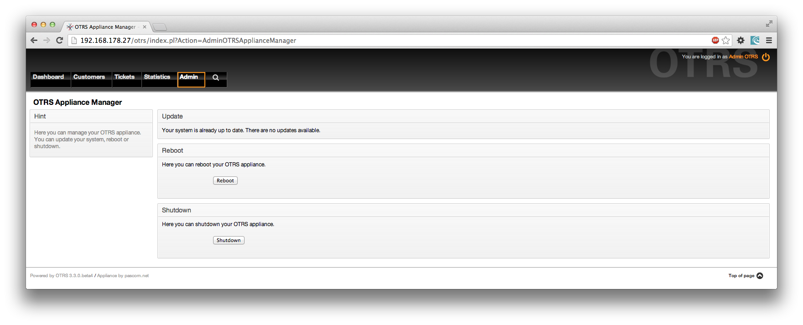

Eneo la kiongozi "Msimamizi wa mfumo wa OTRS"
Ili kusasisha mfumo wa OTRS, au kuwasha tena au kuzima mfumo, kuna eneo la
kiongozi "Msimamizi wa mfumo wa OTRS"
Katika eneo hili utataarifiwa kuhusu usasishaji uliokuwepo kwa mfumo, na
unaweza kuanza tena au kuzima mfumo wako.
